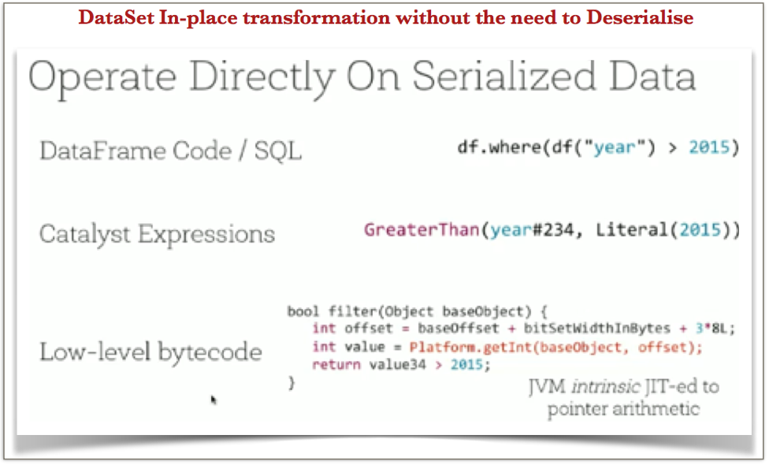
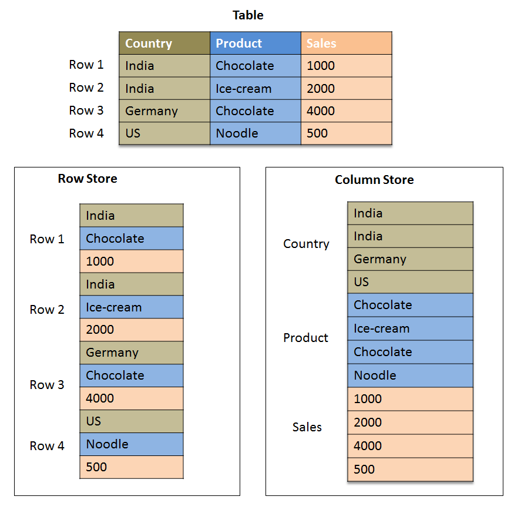

Prehistoria
- The Google File System (2003)
- MapReduce: Simplified Data Processing on Large Clusters (2004)
- Hadoop jako implementacja Open Source bazująca na tych artykułach (2006)
HDFS
- Dane podzielone na bloki (64MB)
- Każdy blok replikowany (domyślnie 3 kopie)
- NameNode vs DataNode
- Dane przechowywane na DataNode
- Mapowania ścieżka -> blok przechowywane na NameNode
HDFS - Architektura

MapReduce
- Dwie fazy:
- Map: input -> list (key, value)
- Reduce: (key, list(value)) -> list(value)
- Dane z mapperów grupowane po kluczu i przekazywane do reducerów
- Hash z klucza decyduje do którego reducera trafi dana para
MapReduce - WordCount

MapReduce c.d.
- Lokalność - mappery tam gdzie bloki z danymi wejściowymi
- Dane przechowywane przeważnie w formatach tekstowych, jako TSV
- W przypadku wielkich plików dzielenie ich na mniejsze części
- Brak mutowalnego stanu - możliwość odtwarzania
Hive
- Projekt stworzony przez Facebooka (2010)
- Opisy przetwarzania przy użyciu podzbioru SQL: HiveQL
- Zapytania tłumaczone na ciąg MapReduce
- Powolne - nawet proste zapytania trwały po kilkanaście - kilkadziesiąt sekund
- Prosty język do opisywania przetwarzania
Problemy MapReduce
- Konieczność zrzucania danych na dysk
- Długi czas instrumentacji
- Konieczność pisania klas Mappera i Reducera dla najprostszych rzeczy
- ... a czasem jeszcze Partitionera, opisu kolejności sortowania.
Spark
- RDD - Resilient Distributed Datasets
- Dane przechowywane w RAM na Executorach, dopóki się mieszczą
- Prosty DSL stworzony w Scali
- Szybkie algorytmy iteracyjne
WordCount w MapReduce
public class WordCount {
public static class Map extends MapReduceBase implements Mapper<LongWritable, Text, Text, IntWritable> {
private final static IntWritable one = new IntWritable(1);
private Text word = new Text();
public void map(LongWritable key, Text value, OutputCollector<Text, IntWritable> output, Reporter reporter) throws IOException {
String line = value.toString();
StringTokenizer tokenizer = new StringTokenizer(line);
while (tokenizer.hasMoreTokens()) {
word.set(tokenizer.nextToken());
output.collect(word, one);
}
}
}
public static class Reduce extends MapReduceBase implements Reducer<Text, IntWritable, Text, IntWritable> {
public void reduce(Text key, Iterator values, OutputCollector<Text, IntWritable> output, Reporter reporter) throws IOException {
int sum = 0;
while (values.hasNext()) {
sum += values.next().get();
}
output.collect(key, new IntWritable(sum));
}
}
WordCount w Sparku
val file = spark.textFile("hdfs://...")
val counts = file.flatMap(line => line.split(" "))
.map(word => (word, 1))
.reduceByKey(_ + _)
counts.saveAsTextFile("hdfs://...")
Spark - działanie
- Dane pogrupowane na partycje (partitions)
- Początkowo partycjonowane w zależności od miejsca, skąd zostały wczytane
- Partycje nie zmieniają się przy prostych przekształceniach
- Czasem jednak potrzebujemy je przegrupować (repartition), co wymaga shuffle - przesłania wszystkich danych przez sieć
- Przykładowo reduceByKey: dane muszą zostać pogrupowane po kluczu
- Shuffle jest operacją kosztowną, więc staramy się ją ograniczać
Spark - działanie c.d.
- Operacje opisane w DSL nie są wykonywane od razu
- Tworzony jest graf zależności
- Dopiero użycie operacji zapisującej wynik uruchamia obliczenia
DataFrames
- Abstrakcja zbudowana na RDD przechowująca dane w formie wierszy / kolumn
- Spark SQL - język bazujący na HiveQL pozwalający opisywać przetwarzanie danych
- ... ale można też używać specjalnego DSLa, odrębnego od RDD
- RDD: data.filter(_.year > 2015), DataFrames: data.where(data("year") > 2015)
Zalety DataFrames
- Optymalizacje przetwarzania (codename Tungsten):
- Optymalizacja planu wykonania, z heurystykami typu predicate pushdown
- Trzymanie danych off-heap w formie kolumnowej
- Stage code generation + JIT
- Ujednolicony interfejs dla Scali/Javy, Pythona i R
Tungsten codegen + JIT
Columnar layout
DataSets
- Brak informacji na temat typów kolumn w DataFrame w trakcie kompilacji
- DataSet - widok na DataFrame tłumaczony na jakiś tym Scalowy
- DataSet[T] wymaga dostarczenia obiektu Encoder[T] - typu zajmującego się tłumaczeniem w obie strony
- Dla podstawowych typów, krotek (tuples) oraz case klas jest domyślna implementacja dostarczana w przezroczysty sposób
- DataFrame = DataSet[InternalRow]
Dodatki do Sparka
- MLlib - algorytmy Machine Learning oraz statystyczne
- GraphX - rozproszone algorytmy grafowe (wciąż bazuje na RDD)
- Spark Streaming - przestarzały framework do algorytmów strumieniowych, obecnie zastąpiony przez tzw. Structured Streaming wbudowany w DataSets